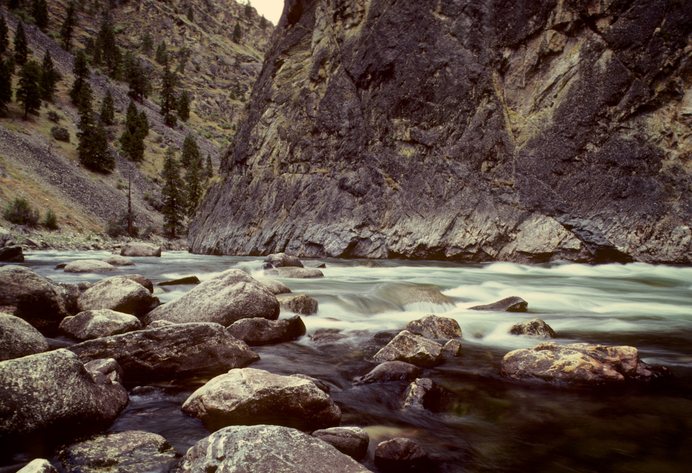

Moab River
Enjoy the breathtaking scenery Of Southern Utah here In Moab. The red rock offers a stunning view throughout your stay here in moab. We offer a variety of tours ranging from a casual ride through the river, to a wild ride through the rapids.We can't wait to help you plan your next adventure! great outdoors.
Colorado river rapids

The Colorado river offers one of the greatest white-water-rapids experiences in the western U.S. Not only do you get to breath in the gorgeous scenery of the rocky mountains, you get the thrill of witnessing the power of mother nature as you rip through the refreshing colorado water.
Salmon river rapids
The Salmon river here in Idaho is where our company first started. For years it has provided serenity to nature lovers and thrill for adreniline seekers. We can't wait to show you the joy of the Salmon river rapids!